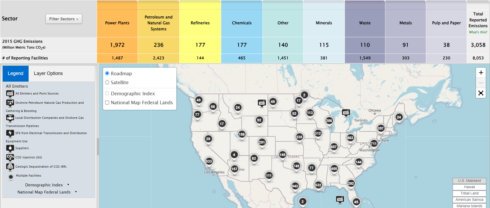

Back
Data for 2011-2015
This is the data for the years 2011 to 2015.
US Data from 2011-2015
This is the data for the years 2011 to 2015.

The IPCC released its Fifth Assessment Report, which reiterated the overwhelming consensus that human activities are the primary driver of climate change. The report noted that global surface temperatures had increased by approximately 0.8°C (1.4°F) since the late 19th century.
The U.S. experienced multiple record-breaking temperature years, with 2012 and 2014 noted for extreme heat, contributing to concerns about the impacts of climate change.
Greenhouse Gas Emissions
1. Total Emissions:
o 2010: Approximately 6,700 million metric tons CO2 equivalent.
o 2011: Around 6,700 million metric tons CO2 equivalent (no significant change).
o 2012: Decreased to about 6,600 million metric tons CO2 equivalent.
o 2013: Approximately 6,400 million metric tons CO2 equivalent.
o 2014: About 6,200 million metric tons CO2 equivalent.
o 2015: Estimated to be around 6,000 million metric tons CO2 equivalent.
Temperature Trends
1. Record Temperatures:
o 2012: The U.S. experienced its hottest year on record (at that time), with an average temperature of 55.3°F (12.8°C), which was 3.2°F (1.8°C) above the 20th-century average.
o 2014: Also marked as one of the warmest years, with several regions experiencing record highs.